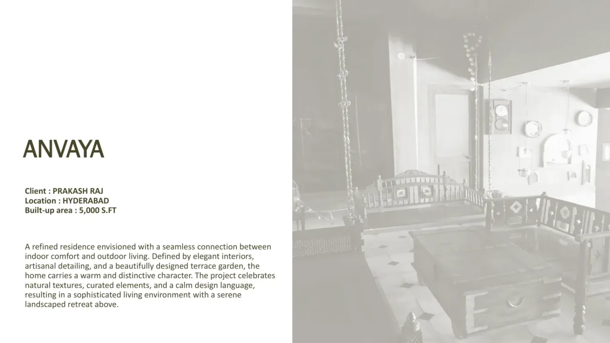
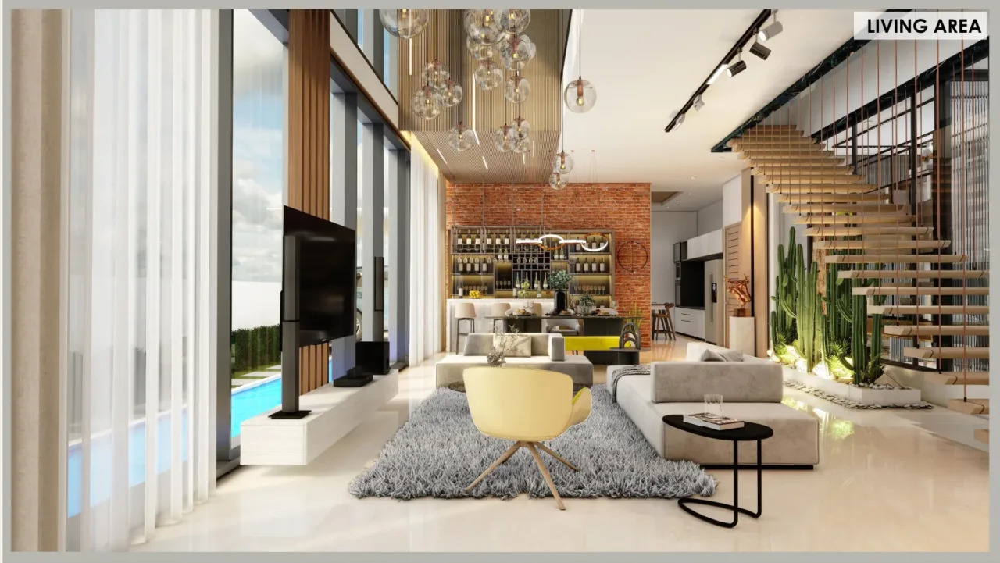
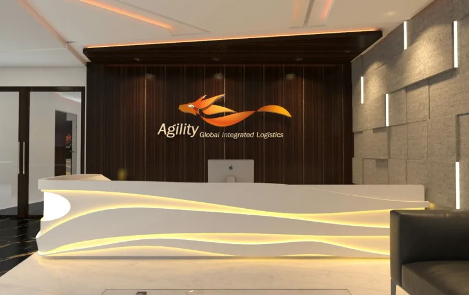

Kozy Design Studio · Hyderabad · Since 1999
Premium interiors for Hyderabad homes.
Interior architecture, villa interiors and turnkey execution, shaped around the people and purpose of each space.
Begin a conversation
Tell us about the space you are imagining.
Kozy works from studios in Sainikpuri, Secunderabad and Banjara Hills, Hyderabad, with projects across the city.
Call or WhatsApp the studio to discuss your property, scope, budget and timeline. A consultation is arranged directly with the Kozy team.
Selected work



What Kozy does
Interior architecture
A considered design direction shaped around the people, site and purpose of each space.
Turnkey execution
One accountable studio from detailed design through coordination and handover.
Residential & commercial
Homes, villas, workplaces, hospitality, healthcare and institutional spaces.
A clear process
From first brief to handover.
Kozy’s process moves through six stages: Understand, Plan, Concept, Detail, Execute and Handover. The first conversation is a chance to discuss your site, requirements, budget and timeline before deciding on a next step.
For a useful first call, have your Hyderabad locality, property type, approximate area and whether you need design or turnkey execution in mind. No form is needed; speak directly with the studio.
Common questions
Does Kozy work on premium homes and villas in Hyderabad?
Kozy designs residential spaces, including apartments and villas, as well as commercial and institutional interiors. Call to discuss your property and location.
Can I discuss turnkey interior execution?
Yes. Tell the team whether you are looking for design alone or design with execution, along with your approximate area and intended start date.
What happens after I call or WhatsApp?
The Kozy team can understand your requirements and agree a suitable consultation time directly with you. A meeting is confirmed only when both sides agree on the slot.